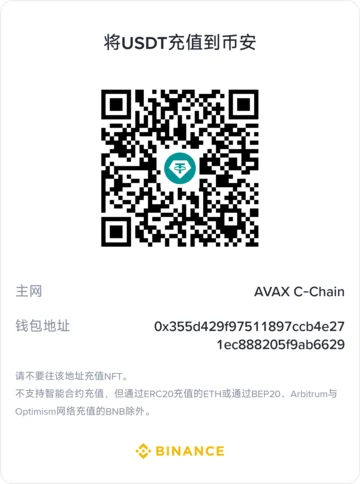

项目宠物
一只猫，13 个矢量形态。主形象与 12 种表情共用一套配色，并遵循 prefers-reduced-motion。
每个 SVG 都随 ecat-cli 打包。运行 ecat pet list 查看 slug、名称和短代码。
加密货币打赏
10 条主网的收款二维码，地址与仓库 README 一致。

一只猫，13 个矢量形态。主形象与 12 种表情共用一套配色，并遵循 prefers-reduced-motion。
每个 SVG 都随 ecat-cli 打包。运行 ecat pet list 查看 slug、名称和短代码。
10 条主网的收款二维码，地址与仓库 README 一致。
